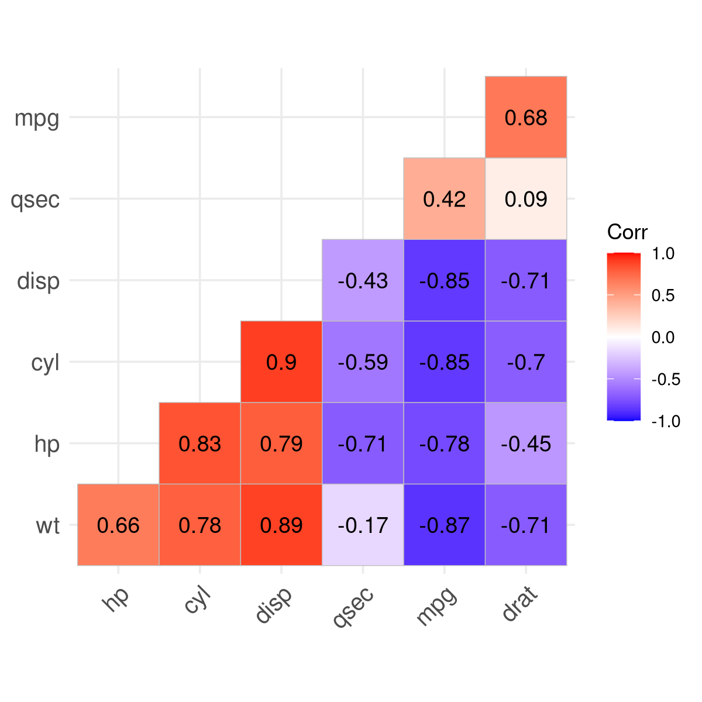
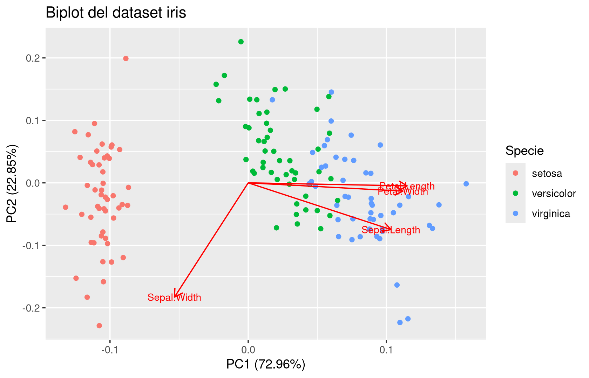
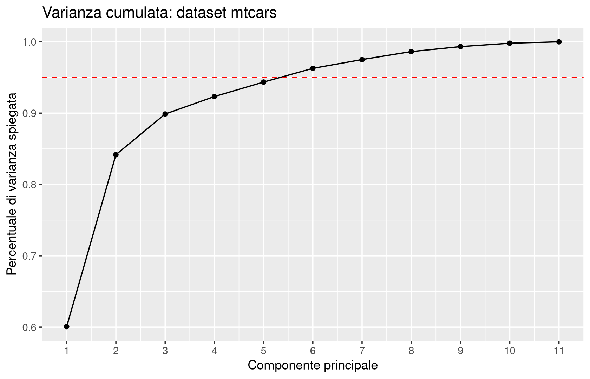

Al termine del capitolo dovresti essere in grado di:
spiegare, con l’euristica segnale/rumore, perché le distanze usate nel capitolo precedente diventano inaffidabili quando il numero di variabili \(d\) è molto grande (“curse of dimensionality”);
derivare e interpretare la formula \(\operatorname{var}(xv) = v^T \operatorname{var}(x) v\) per la varianza direzionale, e riconoscere le proprietà (simmetria, semidefinita positività) della matrice delle covarianze;
distinguere covarianza e correlazione, spiegando perché solo la seconda è indipendente dall’unità di misura;
descrivere la PCA come procedura di massimizzazione ricorsiva della varianza direzionale, collegarla al teorema spettrale, ed eseguirla in R con prcomp;
leggere criticamente uno scree plot, un biplot e una mappa di correlazione, distinguendo cosa mostrano e cosa non dimostrano;
riconoscere la differenza concettuale tra PCA (proiezione) e analisi fattoriale esplorativa (modello generativo), e il significato di unicità e comunalità.
Questo è uno dei capitoli più densi del corso: introduce da zero il linguaggio della statistica multivariata (varianza direzionale, matrice delle covarianze, correlazione) che riutilizzeremo per il resto del libro, in particolare quando parleremo di collinearità nella regressione multipla e di pre-processing per la classificazione con KNN.
3.2 Il problema della dimensionalità elevata
3.2.1 Motivazione
Nel capitolo precedente abbiamo lavorato con un numero di caratteristiche \(d\) contenuto: due o tre coordinate, distanze euclidee facili da visualizzare, cluster leggibili su uno scatterplot. Ma i dati reali hanno spesso decine, centinaia o migliaia di variabili: un’immagine \(28\times 28\) pixel ha \(784\) “caratteristiche” (un valore di grigio per pixel); un profilo genetico può avere decine di migliaia di misurazioni; un questionario può contenere cento domande. Cosa succede ai metodi che abbiamo costruito — distanze, \(k\)-means — quando \(d\) diventa grande? La risposta, un po’ controintuitiva, è che aumentare il numero di caratteristiche non aiuta automaticamente: può anzi peggiorare drasticamente le prestazioni degli algoritmi basati sulla distanza.
3.2.2 Concetto
Come nel capitolo 1, un campione multivariato è una collezione \(\{x_i\}_{i=1,\ldots,n}\) con \(x_i \in \mathbb{R}^d\), organizzata in una matrice (un dataframe, in R) \[
x \in \mathbb{R}^{n\times d}.
\]
ImportantDefinizione (informale)
Si parla di curse of dimensionality (maledizione della dimensionalità) per indicare l’insieme di problemi che sorgono quando il numero di variabili \(d\) è grande rispetto alla quantità di informazione realmente utile contenuta nei dati. Se \(d \gg 1\), la densità di informazione nei dati diminuisce: in particolare, le distanze usuali (euclidea, di Minkowski, ecc.) trattano tutte le componenti allo stesso modo, senza distinguere il segnale (le variabili davvero informative) dal rumore (variabili poco informative o pure fluttuazioni casuali).
3.2.3 Intuizione
Le slide della lezione lasciano volutamente vuota la “spiegazione euristica”: il docente la sviluppa alla lavagna, ed è utile ricostruirla qui perché chiarisce perché il fenomeno si manifesta, anche senza pretesa di rigore.
Supponiamo che ogni individuo \(x_i\) abbia \(k\) componenti “buone”, che contengono davvero il segnale utile a distinguere due individui, e \(d-k\) componenti di puro rumore casuale, ciascuna con varianza \(\sigma^2\) (pensa a misurazioni ripetute con un piccolo errore strumentale, o a caratteristiche del tutto irrilevanti per il problema). Il quadrato della distanza euclidea tra due individui si scompone allora, approssimativamente, come
\[
\|x_i - x_j\|^2 \approx (\text{contributo del segnale, } k \text{ termini}) + (d-k)\,\sigma^2.
\]
Il primo termine resta limitato (dipende solo dalle \(k\) componenti informative), mentre il secondo cresce linearmente con \(d-k\). Se \(d\) è molto più grande di \(k\), il termine di rumore domina completamente la somma: il segnale diventa una piccola fluttuazione dentro un errore enorme, e la distanza calcolata smette di riflettere davvero la somiglianza tra gli individui che ci interessava misurare. Attenzione: questa non è una dimostrazione formale, ma un argomento euristico — utile per capire qualitativamente perché il fenomeno si presenta, non per quantificarlo con precisione in ogni situazione concreta.
Prima di leggere l’esempio seguente, prova a rispondere: se un dataset ha \(2\) variabili informative e \(998\) variabili di puro rumore, ti aspetti che \(k\)-means basato sulla distanza euclidea riesca a separare correttamente i gruppi? Perché?
3.2.4 Esempio
Il primo esempio della lezione è costruito appositamente per mostrare il fenomeno in modo pulito. Si generano \(20\) individui (10 per ciascuna delle due classi \(0\) e \(1\)): la prima colonna del dataset codifica la classe vera, mentre le restanti \(d-1\) colonne sono rumore puro, generato in modo uniforme su \([-1/2, 1/2]\) e completamente scorrelato dalla classe. Si esegue \(k\)-means con \(k=2\) cluster e si confronta la partizione trovata con le classi vere, aumentando progressivamente \(d\):
d = 10
classe vera
cluster individuato 0 1
1 0 10
2 10 0
d = 100
classe vera
cluster individuato 0 1
1 8 0
2 2 10
d = 1000
classe vera
cluster individuato 0 1
1 6 4
2 4 6
Con \(d=10\) il segnale (contenuto in una sola colonna su dieci) è ancora abbastanza forte da guidare \(k\)-means verso una separazione quasi perfetta. Con \(d=100\) cominciano a comparire i primi errori: qualche individuo finisce nel cluster sbagliato. Con \(d=1000\) il risultato degenera praticamente in una divisione casuale al 50%: il segnale, presente in una sola colonna su mille, è ormai completamente sommerso dal rumore delle altre \(999\).
Il secondo esempio usa il dataset MNIST di cifre manoscritte: ogni immagine è una matrice \(28\times 28\) di valori di grigio (da \(0\) a \(255\)), appiattita in un vettore di \(784\) “pixel-caratteristiche”. Qui il segnale (la forma della cifra) non è isolato in un’unica colonna, ma è comunque diluito su centinaia di pixel, molti dei quali (gli angoli dell’immagine, quasi sempre neri) portano pochissima informazione utile a distinguere le cifre.
Alcune cifre del dataset MNIST, con la relativa etichetta.
Selezioniamo \(100\) immagini della cifra \(7\) e \(100\) della cifra \(5\), ed eseguiamo \(k\)-means con \(k=2\), usando il cluster trovato “quasi come un classificatore” (confrontandolo con l’etichetta vera tramite una tabella di contingenza):
classe vera
cluster individuato 5 7
1 31 99
2 69 1
Circa il \(20\%\) delle immagini della cifra \(5\) finisce nel cluster dominato dai \(7\): \(k\)-means non è quindi un buon algoritmo di classificazione per questa coppia di cifre. Vale la pena essere onesti su come è stato costruito l’esempio: la scelta della coppia \(5\)/\(7\) non è casuale, ma volutamente “cherry-picked” perché le due cifre condividono un tratto visivo (la barretta orizzontale superiore) che le rende facili da confondere pixel per pixel; usando \(0\) e \(1\), molto più diversi tra loro, il fenomeno non si osserverebbe altrettanto chiaramente. Questo non invalida la lezione — il segnale utile (la forma) resta effettivamente diluito nel rumore di 784 pixel, molti dei quali quasi identici tra le due cifre — ma ricorda che un esempio didattico è scelto per illustrare un fenomeno, non per misurarne l’entità reale in ogni contesto.
I due centroidi trovati da k-means, visualizzati come immagini.
NoteCome leggere il risultato
I centroidi trovati da \(k\)-means, visualizzati come immagini, sono delle “cifre medie” sfocate: una sagoma che ricorda vagamente un 7 e una che ricorda vagamente un 5-più-7. Il fatto che i centroidi assomiglino a cifre reali è già di per sé interessante: mostra che \(k\)-means, anche in alta dimensione, riesce a catturare qualcosa della struttura — ma la sovrapposizione tra i due gruppi mostra i suoi limiti quando il segnale è diluito su molte variabili poco informative.
3.2.5 Interpretazione e limiti
WarningAttenzione
La curse of dimensionality non è una condanna automatica di ogni dataset con molte colonne. Se le variabili aggiuntive contengono comunque struttura (pensa a immagini, che hanno correlazioni spaziali forti tra pixel vicini, o a serie storiche multivariate), il fenomeno è meno drammatico che nel caso di puro rumore indipendente. Nella pratica industriale, la dimensionalità estremamente elevata non è sempre il problema più urgente; ciò non toglie che ridurre il numero di variabili resti quasi sempre utile: per visualizzare i dati, per velocizzare gli algoritmi successivi, e — come vedremo nei capitoli su classificazione e regressione — per evitare che variabili ridondanti o poco informative peggiorino le prestazioni di modelli come KNN.
Questo fenomeno è il motivo per cui, in questo capitolo, costruiremo strumenti per ridurre il numero di variabili preservando il più possibile l’informazione rilevante: prima dobbiamo però capire come misurare la “variabilità” di un dataset multivariato, il che ci porta alla nozione di varianza direzionale.
3.2.6 Domande di comprensione
Nell’euristica segnale/rumore, cosa succede se aumentiamo \(d\) mantenendo fisso il numero \(k\) di componenti informative? E se aumentassimo invece \(k\) proporzionalmente a \(d\)?
Perché l’esempio con le cifre \(5\) e \(7\) di MNIST è definito esplicitamente “cherry picking” dal docente? Cosa cambierebbe usando le cifre \(0\) e \(1\)?
La curse of dimensionality riguarda solo \(k\)-means, o si applica più in generale a qualunque metodo basato sulla distanza euclidea? Prova a collegare la risposta al capitolo sul clustering.
3.3 Dalla varianza univariata alla varianza direzionale
3.3.1 Motivazione
Per un campione univariato \(x = \{x_i\}_{i=1,\ldots,n} \subseteq \mathbb{R}\) sappiamo già cos’è la varianza. Ma se \(x_i \in \mathbb{R}^d\) con \(d>1\), di quale varianza parliamo? Non esiste un’unica risposta: la “variabilità” di un dataset multivariato dipende dalla direzione lungo cui la osserviamo. L’idea chiave della PCA nascerà proprio da qui: trovare la direzione lungo cui la variabilità è massima.
3.3.2 Concetto
Ricordiamo il caso univariato: \[
\operatorname{var}(x) = \frac{1}{n-1}\sum_{i=1}^n (x_i - \bar x)^2, \qquad \operatorname{sd}(x) = \sqrt{\operatorname{var}(x)},
\] dove la media campionaria \(\bar x = \frac1n \sum_i x_i\) è il minimizzatore del rischio empirico quadratico, \[
\bar x \in \arg\min_{h\in\mathbb{R}} \sum_{i=1}^n (x_i-h)^2,
\] con rischio minimo pari a \((n-1)\operatorname{var}(x)\) — esattamente il paradigma ERM del capitolo 1, applicato qui alla dispersione anziché alla centralità.
Per un campione multivariato \(x \in \mathbb{R}^{n\times d}\), fissiamo una direzione \(v \in \mathbb{R}^d\) e proiettiamo ogni individuo lungo di essa: \[
(x_i v)_{i=1,\ldots,n} = xv \in \mathbb{R}^n.
\]
ImportantDefinizione
La varianza direzionale del campione \(x\) lungo la direzione \(v\) è la varianza (univariata, nel senso usuale) del campione proiettato \(xv\): \[
\operatorname{var}(xv) = \frac{1}{n-1}\sum_{i=1}^n (x_i v - \overline{xv})^2 \ge 0.
\]
3.3.3 Intuizione
Proiettare lungo \(v\) significa “guardare” i dati \(d\)-dimensionali attraverso un’unica lente unidimensionale: ogni punto \(x_i \in \mathbb{R}^d\) diventa un numero \(x_i v \in \mathbb{R}\). Direzioni diverse mostrano aspetti diversi della nuvola di punti: alcune “vedono” i dati molto dispersi, altre li vedono quasi tutti ammassati vicini. La varianza direzionale è precisamente il modo di quantificare quanta dispersione si osserva lungo ciascuna direzione.
3.3.4 Esempio
Consideriamo un piccolo dataset sintetico bidimensionale, pensato apposta perché la struttura si veda “a occhio” prima di qualunque calcolo.
Un piccolo dataset sintetico bidimensionale: lungo quale direzione la variabilità sembra maggiore?
Prima di calcolare: guardando lo scatterplot, ti aspetti che la varianza direzionale sia massima lungo l’asse orizzontale, lungo quello verticale, o lungo una direzione obliqua? Da che cosa lo capisci?
Calcoliamo ora esplicitamente la varianza direzionale lungo tre direzioni: l’asse \(x_1\) (\(v=(1,0)\)), l’asse \(x_2\) (\(v=(0,1)\)), e la direzione diagonale che segue visivamente la nuvola di punti (\(v \propto (1,1.5)\), normalizzata):
x <-as.matrix(dati_toy)proietta_e_varianza <-function(x, v) { v <- v /sqrt(sum(v^2)) # normalizziamo a norma 1 proiezione <- x %*% vvar(proiezione)}proietta_e_varianza(x, c(1, 0)) # lungo x1
Dopo il calcolo: la direzione diagonale, allineata con la nuvola di punti, ha effettivamente varianza direzionale nettamente più alta delle due direzioni degli assi coordinati. Questo è esattamente il fenomeno che la PCA sfrutterà: cercare, tra tutte le direzioni possibili (non solo gli assi coordinati), quella di varianza massima.
3.3.5 Domande di comprensione
Se \(v\) e \(-v\) indicano la stessa retta ma verso opposto, cosa ti aspetti riguardo a \(\operatorname{var}(xv)\) e \(\operatorname{var}(x(-v))\)? Prova a giustificarlo dalla definizione.
Perché nella definizione di varianza direzionale si richiede spesso \(\|v\|=1\)? Cosa succederebbe alla varianza se scalassimo \(v\) per un fattore \(10\)?
Esiste una direzione lungo la quale la varianza direzionale è sempre \(0\), qualunque sia il dataset? (Suggerimento: pensa a \(v=0\), e poi a casi meno banali.)
3.4 La matrice delle covarianze
3.4.1 Motivazione
Calcolare \(\operatorname{var}(xv)\) separatamente per ogni direzione \(v\) che ci interessa, ripetendo ogni volta la somma su \(i\), sarebbe scomodo. Vorremmo un singolo oggetto che riassuma “tutta l’informazione sulla variabilità multivariata” e da cui la varianza direzionale lungo qualunque \(v\) si ottenga con un semplice calcolo algebrico.
3.4.2 Concetto
Vale l’identità (che dimostriamo tra un momento) \[
\overline{xv} = \bar x v, \qquad \operatorname{var}(xv) = v^T \operatorname{var}(x)\, v,
\] dove la matrice delle covarianze campionarie è definita da \[
\operatorname{var}(x) = \frac{1}{n-1}\sum_{i=1}^n (x_i-\bar x)^T (x_i - \bar x) \in \mathbb{R}^{d\times d}.
\]
ImportantDefinizione
La matrice delle covarianze \(\operatorname{var}(x)\) è una matrice \(d\times d\) che è:
semidefinita positiva: \(v^T \operatorname{var}(x)\, v \ge 0\) per ogni \(v \in \mathbb{R}^d\).
Attenzione: semidefinita positiva non significa che tutte le sue componenti siano numeri positivi — significa solo che, applicata a un vettore qualunque, la forma quadratica associata non è mai negativa. Come vedremo tra poco, questa è esattamente la proprietà che rende \(\operatorname{var}(xv)\ge0\) per ogni \(v\), come deve essere per qualunque varianza.
3.4.3 Intuizione: da dove viene la formula
Vale la pena vedere il calcolo, perché chiarisce cosa significa davvero la matrice delle covarianze. Scrivendo \(x_i\) come vettore riga e \(v\) come vettore colonna (convenzione che useremo sempre in questo libro — attenzione, altre fonti possono usare la convenzione opposta, trasposta), \[
\operatorname{var}(xv) = \frac{1}{n-1}\sum_i (x_iv - \bar x v)^2 = \frac{1}{n-1}\sum_i \big((x_i-\bar x)v\big)^2.
\] Ogni termine \((x_i-\bar x)v\) è uno scalare, quindi coincide con la sua trasposta: \[
\big((x_i-\bar x)v\big)^2 = \big((x_i-\bar x)v\big)^T \big((x_i-\bar x)v\big) = v^T (x_i-\bar x)^T (x_i-\bar x)\, v,
\] usando la regola \((AB)^T = B^T A^T\). Sommando su \(i\) e portando \(v^T\) e \(v\) fuori dalla somma (non dipendono da \(i\)), \[
\operatorname{var}(xv) = v^T \left[\frac{1}{n-1}\sum_i (x_i-\bar x)^T(x_i-\bar x)\right] v = v^T \operatorname{var}(x)\, v.
\]
TipApprofondimento
Questa derivazione mostra anche perché \(\operatorname{var}(x)\) è automaticamente semidefinita positiva: è costruita come una somma di prodotti del tipo \(u^Tu \ge 0\) (con \(u=(x_i-\bar x)v\)), quindi la forma quadratica \(v^T\operatorname{var}(x)v\) è una somma di quadrati, sempre \(\ge 0\).
Guardiamo ora le singole componenti. Per \(j,\ell \in \{1,\ldots,d\}\), \[
\operatorname{var}(x)_{j,\ell} = \frac{1}{n-1}\sum_{i=1}^n (x_{i,j}-\bar x_j)(x_{i,\ell}-\bar x_\ell) =: \operatorname{cov}(x_j, x_\ell),
\] ottenuta scegliendo \(v=e_j\), \(w=e_\ell\) (vettori della base canonica) in una definizione generale \(\operatorname{cov}(xv,xw) := v^T\operatorname{var}(x)\,w\). Più in generale, per matrici \(V\in\mathbb{R}^{d\times k_1}\), \(W\in\mathbb{R}^{d\times k_2}\), \[
\operatorname{cov}(xV, xW) = V^T \operatorname{var}(x)\, W \in \mathbb{R}^{k_1\times k_2}, \qquad \operatorname{var}(xV) = V^T\operatorname{var}(x)\, V.
\] Queste formule di trasformazione torneranno utili più avanti, quando parleremo di scores e loadings della PCA.
Interpretiamo il segno di \(\operatorname{cov}(x_j,x_\ell)\): se è positiva, quando la caratteristica \(j\) di un individuo è sopra la sua media, tipicamente anche la caratteristica \(\ell\) è sopra la sua media (e viceversa se entrambe sono sotto media); se è negativa, quando una è sopra media l’altra tende a essere sotto media. La covarianza cattura quindi una nozione qualitativa di “associazione” tra due variabili — un’idea che formalizzeremo tra un attimo con il coefficiente di correlazione, e che ritroveremo, più precisa, quando parleremo di regressione.
La covarianza è inoltre bilineare: \[
\operatorname{cov}(x+x', y) = \operatorname{cov}(x,y) + \operatorname{cov}(x',y), \qquad \operatorname{cov}(x, y+y') = \operatorname{cov}(x,y)+\operatorname{cov}(x,y'),
\] da cui segue la regola per la varianza della somma: \[
\operatorname{var}(x+x') = \operatorname{var}(x) + \operatorname{var}(x') + 2\operatorname{cov}(x,x').
\] Se \(x\) e \(x'\)non sono correlate, \(\operatorname{cov}(x,x')=0\), le varianze si sommano semplicemente: \(\operatorname{var}(x+x')=\operatorname{var}(x)+\operatorname{var}(x')\). Questa identità richiamerà, più avanti nel corso, la scomposizione bias-varianza in regressione.
3.4.4 Esempio
Riprendiamo il piccolo dataset sintetico bidimensionale della sezione precedente e calcoliamo direttamente la matrice delle covarianze:
var(dati_toy)
x1 x2
x1 14.17586 19.65065
x2 19.65065 31.46675
Confrontiamo con il calcolo diretto della varianza direzionale usato prima: \(v^T \operatorname{var}(x)\, v\) per \(v=(1,1.5)/\|(1,1.5)\|\) deve coincidere con proietta_e_varianza(x, c(1,1.5)):
v <-c(1, 1.5) /sqrt(sum(c(1, 1.5)^2))t(v) %*%var(dati_toy) %*% v
[,1]
[1,] 44.28554
I due numeri coincidono (a meno di arrotondamenti): la matrice delle covarianze contiene davvero tutta l’informazione necessaria per calcolare la varianza direzionale lungo qualunque direzione, senza dover rifare il conto da capo ogni volta.
3.4.5 Interpretazione e limiti
WarningAttenzione
La covarianza (e, come vedremo, la correlazione) misura soltanto associazione lineare. Due variabili possono essere fortemente legate da una relazione non lineare (per esempio \(x_2 = x_1^2\) su un intervallo simmetrico attorno a \(0\)) e avere comunque covarianza vicina a zero. Inoltre — punto su cui torneremo tra poco — un’associazione, anche forte, non implica un rapporto di causa-effetto.
Inoltre, a differenza della correlazione che introdurremo nella prossima sezione, la covarianza dipende dall’unità di misura: se una caratteristica è misurata in metri anziché centimetri, la sua varianza cambia di un fattore \(100^2\), e con essa tutte le covarianze che la coinvolgono. Questo sarà il punto di partenza della prossima sezione.
3.4.6 Domande di comprensione
Se moltiplichiamo tutti i valori della variabile \(x_1\) per una costante \(c\), come cambia \(\operatorname{var}(x_1)\)? E \(\operatorname{cov}(x_1,x_2)\)?
Due variabili hanno covarianza \(0\). Puoi concludere che sono indipendenti? Puoi concludere che non sono associate in alcun modo? Motiva la differenza.
Perché la matrice delle covarianze deve essere semidefinita positiva “per forza”, indipendentemente dai dati osservati?
3.5 Il coefficiente di correlazione di Pearson e la matrice di correlazione
3.5.1 Motivazione
Abbiamo appena osservato che la covarianza eredita l’unità di misura delle variabili coinvolte: \(\operatorname{cov}(x_1,x_2)\) ha le “unità” del prodotto delle unità di \(x_1\) e \(x_2\). Questo crea un problema pratico serio: se qualcuno misura le stesse quantità con unità di misura diverse — per esempio va negli Stati Uniti e misura temperature in gradi Fahrenheit invece che Celsius, o lunghezze in piedi invece che metri — otterrebbe una matrice delle covarianze completamente diversa, pur descrivendo esattamente gli stessi oggetti. Vorremmo un indicatore di associazione lineare che non dipenda da come sono state scelte le unità di misura.
3.5.2 Concetto
Consideriamo il caso \(d=2\), \(x=(x_1,x_2)\). La matrice delle covarianze è \[
\operatorname{var}(x) = \begin{pmatrix} \operatorname{var}(x_1) & \operatorname{cov}(x_1,x_2) \\ \operatorname{cov}(x_2,x_1) & \operatorname{var}(x_2)\end{pmatrix}.
\] Essendo semidefinita positiva, il suo determinante è \(\ge 0\): \[
\operatorname{var}(x_1)\operatorname{var}(x_2) \ge \operatorname{cov}(x_1,x_2)^2.
\]
TipApprofondimento
Perché una matrice simmetrica semidefinita positiva ha determinante \(\ge0\)? Perché i suoi autovalori sono tutti \(\ge0\) (conseguenza diretta della definizione: se \(Mv=\lambda v\) con \(v\ne0\), allora \(0\le v^TMv = \lambda v^Tv = \lambda \|v\|^2\), quindi \(\lambda\ge0\)), e il determinante di una matrice simmetrica è il prodotto dei suoi autovalori. Un prodotto di numeri non negativi è non negativo.
ImportantDefinizione
Il coefficiente di correlazione di Pearson tra \(x_1\) e \(x_2\) è \[
\operatorname{cor}(x_1,x_2) := \frac{\operatorname{cov}(x_1,x_2)}{\operatorname{sd}(x_1)\operatorname{sd}(x_2)} \in [-1,1].
\] Valori vicini a \(\pm 1\) indicano una forte relazione lineare tra le due variabili, \(x_1 \approx a\, x_2 + b\); valori vicini a \(0\) indicano assenza di relazione lineare (ma non necessariamente assenza di qualunque relazione — si veda il limite discusso sopra per la covarianza).
A differenza della covarianza, la correlazione è un numero “puro”, senza unità di misura: la disuguaglianza sul determinante garantisce esattamente che il rapporto resti confinato in \([-1,1]\), qualunque sia la scala delle variabili originarie. Non a caso, il coefficiente di correlazione ricorda per intervallo un altro indicatore già incontrato nel capitolo sul clustering: il coefficiente di silhouette, anch’esso compreso tra \(-1\) e \(1\) — in entrambi i casi gli estremi segnalano una situazione “netta” (forte associazione lineare da un lato, assegnazione di cluster inequivocabile dall’altro), mentre i valori vicini a \(0\) segnalano ambiguità.
Per \(d\) generale, definiamo la matrice di correlazione\[
\operatorname{cor}(x) = \operatorname{SD}(x)^{-1} \operatorname{cov}(x)\, \operatorname{SD}(x)^{-1} \in \mathbb{R}^{d\times d},
\] dove \(\operatorname{SD}(x)\) è la matrice diagonale con \(\operatorname{SD}(x)_{jj} = \operatorname{sd}(x_j)\). Vale \(\operatorname{cor}(x)_{j,\ell} = \operatorname{cor}(x_j,x_\ell)\); la matrice di correlazione è anch’essa simmetrica, semidefinita positiva, e ha sempre \(1\) sulla diagonale (ogni variabile è perfettamente correlata con sé stessa). Un fatto importante: \[
\operatorname{scale}(x) := (x - \bar x)\,\operatorname{SD}(x)^{-1} \quad \Longrightarrow \quad \operatorname{cov}(\operatorname{scale}(x)) = \operatorname{cor}(x):
\] la matrice di correlazione delle variabili originali coincide con la matrice di covarianza delle variabili standardizzate (centrate e riscalate a deviazione standard \(1\)). Questa identità è la chiave dell’algoritmo PCA che vedremo tra poco.
3.5.3 Esempio
Usiamo il dataset mtcars (caratteristiche tecniche di automobili) per costruire una mappa di calore delle correlazioni tra le prime sette variabili:
library(ggcorrplot)ggcorrplot(cor(mtcars[1:7]), hc.order =TRUE, type ="lower", lab =TRUE)

Matrice di correlazione tra sette variabili tecniche del dataset mtcars.
NoteCome leggere il risultato
Ogni cella mostra la correlazione tra la coppia di variabili corrispondente, con un colore che ne indica intensità e segno. Notiamo, per esempio, una correlazione fortemente negativa tra numero di cilindri (cyl) e consumo (mpg, miglia per gallone): motori più grandi consumano di più, quindi percorrono meno miglia con lo stesso carburante. Al contrario, cilindri e potenza (hp) sono fortemente correlati positivamente (\(\approx 0.83\)): motori con più cilindri tendono a essere più potenti. L’opzione hc.order = TRUE riordina righe e colonne raggruppando le variabili più simili tra loro vicine: un’idea che si può vedere come un piccolo clustering applicato alle variabili invece che agli individui — variabili fortemente correlate finiscono ammassate nello stesso “blocco” della mappa, un po’ come punti simili finiscono nello stesso cluster nel capitolo precedente. Correlazioni molto piccole (per esempio \(0.09\) o \(0.17\), se compaiono) segnalano semplicemente coppie di variabili senza relazione lineare rilevante, e normalmente non meritano ulteriore commento.
Costruiamo ora un secondo esempio, con un piccolo dataset sintetico di voti d’esame, per osservare da vicino un limite pratico della correlazione: la sensibilità a valori anomali.
set.seed(7)n <-20matematica <-rnorm(n, mean =24, sd =3)fisica <- matematica +rnorm(n, sd =1.5) # fortemente associata a matematicavoti <-data.frame(matematica, fisica)cor(voti$matematica, voti$fisica)
[1] 0.9489762
# aggiungiamo un solo studente anomalo: bravissimo in matematica, pessimo in fisicavoti_outlier <-rbind(voti, data.frame(matematica =30, fisica =5))cor(voti_outlier$matematica, voti_outlier$fisica)
[1] 0.3777698
Un singolo studente anomalo — bravissimo in un esame, pessimo nell’altro — è sufficiente per far crollare la correlazione osservata da un valore molto alto a un valore molto più modesto. La correlazione, come la media e la varianza, non è una statistica robusta.
3.5.4 Interpretazione e limiti
WarningAttenzione: correlazione non è causalità
Una correlazione forte tra \(x_1\) e \(x_2\) non implica che una causi l’altra. La correlazione è per costruzione simmetrica: se \(\operatorname{cor}(x_1,x_2)\) è vicina a \(1\), il ruolo di \(x_1\) e \(x_2\) è del tutto intercambiabile nella formula, mentre una relazione causale ha una direzione precisa. Potrebbe anche esistere una terza variabile, non osservata, che è causa comune di entrambe (un classico esempio: nei mesi estivi, vendite di gelato e numero di annegamenti sono correlati positivamente, ma nessuno dei due causa l’altro — entrambi dipendono dalla temperatura). Torneremo su questo punto, con strumenti più precisi, quando parleremo di regressione lineare.
TipUn po’ di storia
L’idea di usare strumenti dell’algebra lineare — in particolare, come vedremo tra poco, il teorema spettrale — per studiare la struttura di variabilità di dati multivariati risale, storicamente, a Karl Pearson, lo stesso statistico a cui si deve il coefficiente di correlazione appena introdotto.
3.5.5 Domande di comprensione
Perché la correlazione, a differenza della covarianza, non cambia se misuriamo le variabili in unità diverse (per esempio centimetri invece di metri)?
Due variabili hanno correlazione \(\operatorname{cor}(x_1,x_2) = 0.02\). Cosa puoi concludere, e cosa non puoi concludere, sulla loro relazione?
Nell’esempio dei voti d’esame, un solo studente anomalo ha cambiato sensibilmente la correlazione stimata. Che relazione vedi con la sensibilità della media agli outlier discussa nel capitolo 1?
Guardando una mappa di correlazione come quella di mtcars, quale informazione aggiuntiva ti servirebbe per stabilire se una correlazione osservata è dovuta al caso oppure a un legame “reale”?
3.6 Un framework generale per la riduzione della dimensionalità
3.6.1 Motivazione
Con gli strumenti di varianza e correlazione possiamo ora affrontare il problema centrale del capitolo: come ridurre un dataset con molte variabili a un numero più piccolo, preservando l’informazione essenziale. Un buon modo di pensare a questo problema è vederlo come un clustering applicato alle colonne invece che alle righe del dataset: raggruppare (o sintetizzare) caratteristiche fortemente associate tra loro, proprio come nel capitolo precedente raggruppavamo individui simili.
3.6.2 Concetto
Dato \(x \in \mathbb{R}^{n\times d}\), l’obiettivo è trovare una buona approssimazione \(z \in \mathbb{R}^{n\times k}\), con \(k \ll d\). Esistono due approcci concettualmente diversi:
Proiezione/selezione delle caratteristiche: una mappa \(\Pi: \mathbb{R}^d \to \mathbb{R}^k\) che comprime ogni individuo, \(z_i = \Pi(x_i)\);
Generazione/parametrizzazione (spazio latente): una mappa \(g: \mathbb{R}^k \to \mathbb{R}^d\) che, a partire da poche coordinate latenti, ricostruisce (approssimativamente) i dati originali, \(x_i \approx g(z_i)\).
I due approcci si possono anche combinare in un autoencoder: \(\Pi\) comprime, \(g\) decomprime, e si richiede che \(g \circ \Pi(x_i) \approx x_i\), cioè che comprimendo e decomprimendo si torni vicino al punto di partenza. Un’analogia utile è quella della compressione di un’immagine: lo spazio a bassa dimensione \(z\) è come un’immagine a bassa risoluzione, e la mappa generativa \(g\) è il procedimento che la riporta ad alta definizione. Gli approcci generativi (autoencoder, e più in generale i moderni modelli generativi basati su reti neurali) sono oggi molto popolari nel machine learning; in questo corso ci concentriamo invece sull’approccio classico di proiezione lineare, che ha il vantaggio di essere completamente trasparente e interpretabile.
Restringiamoci quindi a mappe lineari: \[
\Pi(x_i) = x_i U + b, \qquad g(z_i) = z_i L + \varepsilon,
\] per opportune matrici \(U, L\) e vettori/errori \(b,\varepsilon\). La PCA, che introduciamo nella prossima sezione, è precisamente la scelta ottimale di \(\Pi\) (proiezione lineare, con \(b=0\)); l’analisi fattoriale esplorativa, che chiuderà il capitolo, è invece pensata dal lato generativo.
3.6.3 Limiti
WarningAttenzione
I metodi che vedremo in questo capitolo richiedono caratteristiche numeriche. Variabili qualitative (fattori, categorie) richiedono tecniche diverse e più complesse, che non tratteremo in questo corso.
3.6.4 Domande di comprensione
In che senso l’approccio di proiezione e quello generativo sono “duali” tra loro?
Perché un autoencoder può essere visto come la combinazione dei due approcci?
Che relazione vedi tra l’analogia “clustering sulle colonne” per la riduzione di dimensionalità e il clustering “sulle righe” del capitolo precedente? In cosa sono simili gli obiettivi, e in cosa differiscono?
3.7 Analisi delle componenti principali (PCA): il caso \(k=1\)
3.7.1 Motivazione
Cominciamo dal caso più semplice: comprimere ogni individuo in un unico numero, scegliendo la direzione di proiezione che preserva il più possibile la variabilità originale dei dati.
3.7.2 Concetto
ImportantDefinizione
Cerchiamo una proiezione \(\Pi(x_i) = x_i v\), con \(v\in\mathbb{R}^d\) e \(\|v\|=1\), tale che la varianza direzionale sia massima: \[
v_1 \in \arg\max_{\|v\|=1} \operatorname{var}(xv).
\] Poiché \(\operatorname{var}(xv) = v^T\operatorname{var}(x)v\), si dimostra che \(v_1\) è un autovettore di \(\operatorname{var}(x)\) con autovalore massimo \(\lambda_1\): \[
\operatorname{var}(x)\, v_1 = \lambda_1 v_1, \qquad \operatorname{var}(xv_1) = \lambda_1.
\] La direzione \(v_1\) è detta prima componente principale di \(x\).
3.7.3 Intuizione
Perché il massimizzatore della varianza direzionale deve essere un autovettore? Intuitivamente: se \(v\) è un autovettore, la matrice \(\operatorname{var}(x)\) applicata a \(v\) restituisce un multiplo di \(v\) stesso — la matrice “dilata” lungo quella direzione senza ruotarla. Se spostassimo leggermente \(v\) in una direzione qualunque, la varianza direzionale diminuirebbe: è proprio questa proprietà di “punto stazionario” a caratterizzare gli autovettori come candidati ottimali. E l’autovalore associato ha un significato preciso: non è un numero astratto, ma esattamente la varianza dei dati lungo quella direzione, \(\operatorname{var}(xv_1) = v_1^T \operatorname{var}(x) v_1 = v_1^T (\lambda_1 v_1) = \lambda_1 \|v_1\|^2 = \lambda_1\) (usando \(\|v_1\|=1\)). L’autovalore massimo della matrice delle covarianze è la massima varianza direzionale possibile.
WarningAttenzione: ambiguità del segno
Se \(v_1\) massimizza \(\operatorname{var}(xv)\), anche \(-v_1\) lo fa, dato che \(\operatorname{var}(x(-v)) = (-v)^T\operatorname{var}(x)(-v) = v^T\operatorname{var}(x)v = \operatorname{var}(xv)\). La PCA individua quindi una direzione, non un verso orientato: se in due software (o in due esecuzioni con seed diversi) trovi che i segni degli score della prima componente sono invertiti, non è un errore — è semplicemente una scelta arbitraria di verso lungo la stessa retta.
TipApprofondimento: la demo interattiva Ms PCA-Man
Durante la lezione, il docente propone un gioco interattivo (l’applicazione Shiny “Ms PCA-Man”) in cui è possibile generare o caricare dataset bidimensionali reali e provare a indovinare a occhio la direzione della prima componente principale, confrontandola poi con quella calcolata esattamente. Il gioco rivela un’insidia istruttiva: se i dati non sono standardizzati, la variabilità osservata lungo un asse dipende anche dall’unità di misura usata su quell’asse (millimetri anziché metri, per esempio, gonfiano artificialmente la varianza in quella direzione), e la scelta “a occhio” può essere ingannata da questo effetto puramente di scala. Dopo la standardizzazione, che vedremo tra poco far parte integrante dell’algoritmo PCA, questo problema scompare: gli assi sono riportati su una scala comune (media \(0\), deviazione standard \(1\)), e la direzione di massima variabilità riflette davvero la forma della nuvola di punti, non le unità di misura scelte per registrarla.
3.7.4 Esempio
Torniamo al dataset sintetico bidimensionale già usato in precedenza. Prima di calcolare: dallo scatterplot iniziale, la direzione di massima variabilità sembrava seguire l’andamento diagonale della nuvola di punti. Verifichiamolo con prcomp, la funzione R standard per la PCA:
pca_toy <-prcomp(dati_toy, scale. =FALSE)pca_toy$rotation # colonne = componenti principali
pca_toy$sdev^2# autovalori (varianze lungo le componenti)
[1] 44.289697 1.352912
La prima colonna di rotation è \(v_1\) (a meno del segno): confronta la direzione indicata con quella che avevi individuato “a occhio” nello scatterplot. La varianza spiegata dalla prima componente (sdev[1]^2) dovrebbe essere molto vicina al valore di \(\operatorname{var}(xv)\) che avevamo calcolato a mano per la direzione diagonale.
3.7.5 Interpretazione
Un uso pratico della prima componente principale, spesso trascurato, è la costruzione di una classifica (ranking): proiettando ogni individuo lungo \(v_1\) si ottiene un unico numero che riassume, nel modo che preserva più variabilità possibile, tutte le caratteristiche di partenza. Questo è esattamente il principio dietro molti indici sintetici costruiti a partire da più variabili (indicatori compositi socio-economici, punteggi di qualità aggregati, eccetera): non è l’unico obiettivo possibile della riduzione di dimensionalità, ma è un’applicazione diretta anche della sola prima componente.
3.7.6 Domande di comprensione
Se ruotiamo l’intero dataset di \(90°\) nel piano, cosa succede alla prima componente principale? E se invece lo trasliamo (sommiamo una costante a tutte le osservazioni)?
Perché non ha senso dire che “la prima componente principale punta verso valori alti di \(x_1\)” come proprietà intrinseca della PCA?
Nella demo “Ms PCA-Man”, perché la standardizzazione elimina l’insidia dell’unità di misura quando si cerca di indovinare la direzione a occhio?
3.8 Il caso generale e il teorema spettrale
3.8.1 Motivazione
Una sola componente riassume solo una parte dell’informazione. Vogliamo procedere trovando una seconda direzione, poi una terza, e così via — ma senza semplicemente ripetere la stessa direzione già trovata.
3.8.2 Concetto
Procediamo ricorsivamente: avendo già trovato le prime \(k-1\) componenti principali \(v_1,\ldots,v_{k-1}\), cerchiamo \(v_k \in \mathbb{R}^d\), con \(\|v_k\|=1\), ortogonale a tutte le precedenti (\(v_j^T v_k = 0\) per ogni \(j<k\)), che tra tutte le direzioni ortogonali residue massimizzi la varianza direzionale: \[
v_k \in \arg\max_{v:\, v_j^Tv=0\ \forall j<k} \operatorname{var}(xv).
\] Si dimostra che anche \(v_k\) è un autovettore di \(\operatorname{var}(x)\), con autovalore \(\lambda_k\), e che gli autovalori trovati via via sono decrescenti: \[
\lambda_1 = \operatorname{var}(xv_1) \ge \lambda_2 \ge \cdots \ge \lambda_k = \operatorname{var}(xv_k) \ge 0
\] (non negativi, perché \(\operatorname{var}(x)\) è semidefinita positiva).
La procedura termina esattamente a \(k=d\): si ottiene una base ortonormale di \(\mathbb{R}^d\) fatta di autovettori \((v_1,\ldots,v_d)\) di \(\operatorname{var}(x)\). In forma matriciale, scrivendo \(V=(v_1,\ldots,v_d)\) (colonne): \[
\operatorname{var}(xV) = V^T \operatorname{var}(x)\, V = \Lambda,
\] dove \(\Lambda\) è la matrice diagonale con gli autovalori \(\lambda_1 \ge \cdots \ge \lambda_d \ge 0\). In particolare, \(\operatorname{cov}(xv_j,xv_k) = 0\) se \(j\ne k\): le proiezioni lungo componenti principali diverse sono sempre non correlate.
3.8.3 Intuizione
La costruzione ricorsiva appena descritta dimostra, come sottoprodotto, un fatto centrale dell’algebra lineare: ogni matrice simmetrica ammette una base ortonormale di autovettori (il teorema spettrale, qui enunciato per matrici semidefinite positive, ma valido più in generale per qualunque matrice simmetrica). Vale la pena sottolineare quanto sia notevole questo risultato: è probabilmente uno dei teoremi più eleganti ed utili di tutta l’algebra lineare, ed è proprio questa proprietà — l’esistenza di coordinate privilegiate lungo cui una matrice simmetrica “si comporta come una semplice dilatazione, senza rotazioni” — a rendere possibile l’intera costruzione della PCA. Come accennato in precedenza, l’idea di sfruttare questo teorema per ridurre la dimensionalità dei dati è storicamente attribuita a Pearson.
TipApprofondimento: come si calcola davvero la PCA in pratica
La costruzione ricorsiva presentata qui è concettualmente chiara ma non è l’algoritmo effettivamente implementato nei software statistici: in pratica si usano metodi numerici più efficienti e stabili (basati sulla scomposizione ai valori singolari, SVD, della matrice dei dati), che restituiscono direttamente l’intera base di autovettori senza doverli trovare uno alla volta. Il risultato matematico è comunque equivalente: le componenti principali restano definite dagli stessi autovettori e autovalori.
3.8.4 Domande di comprensione
Perché è necessario imporre l’ortogonalità \(v_j^Tv_k=0\) nella ricerca della \(k\)-esima componente principale, invece di massimizzare semplicemente la varianza direzionale su tutte le direzioni possibili?
Cosa significherebbe, in pratica, trovare \(\lambda_2 = \lambda_1\) (i primi due autovalori uguali)? La seconda componente principale sarebbe ancora univocamente determinata?
Perché la non-correlazione tra \(xv_j\) e \(xv_k\) (per \(j\ne k\)) è una conseguenza dell’ortogonalità dei rispettivi autovettori, e non un’ipotesi aggiuntiva?
3.9 L’algoritmo PCA, gli score e la matrice dei loadings
3.9.1 Motivazione
Mettiamo ora insieme i pezzi in una procedura operativa, applicabile a un dataset qualunque con prcomp in R.
3.9.2 Concetto
ImportantAlgoritmo PCA
Standardizzare i dati: \(x \leftarrow \operatorname{scale}(x)\);
calcolare \(\operatorname{var}(x) = \operatorname{cor}(x)\) (coincidono, dopo la standardizzazione);
determinare una base ortonormale di autovettori \(V=(v_1,\ldots,v_d)\), con autovalori decrescenti \(\lambda_1\ge\cdots\ge\lambda_d\ge0\);
scegliere\(1\le k \le d\) e porre \(U = V_{\le k} := (v_1,\ldots,v_k)\);
proiettare: \(z := xU\), le nuove caratteristiche, dette scores (punteggi): \[
z_{i,\ell} = \sum_{j=1}^d x_{i,j}\, v_{\ell,j}, \qquad i=1,\ldots,n,\ \ \ell=1,\ldots,k.
\]
Perché la standardizzazione al passo 1 è così importante? Se una caratteristica ha, per pura ragione di unità di misura, una varianza molto più grande delle altre, la PCA — che per costruzione cerca la direzione di massima varianza — sarà quasi automaticamente attratta verso quella caratteristica, indipendentemente dalla sua reale importanza statistica. Vediamolo con un esempio numerico prima di procedere con l’interpretazione teorica degli score.
NoteCome leggere il risultato: PCA senza e con standardizzazione
Consideriamo il dataset mtcars. Le sue variabili hanno scale molto diverse: disp (cilindrata) ha valori dell’ordine delle centinaia, hp (potenza) delle centinaia, mentre am (cambio manuale/automatico) è binaria, \(0\) o \(1\). Confrontiamo la prima componente principale calcolata senza e con standardizzazione:
pca_non_standardizzata <-prcomp(mtcars, scale. =FALSE)pca_standardizzata <-prcomp(mtcars, scale. =TRUE)# quota di varianza spiegata dalla prima componente in ciascun casosummary(pca_non_standardizzata)$importance[2, 1]
[1] 0.927
summary(pca_standardizzata)$importance[2, 1]
[1] 0.60076
# "peso" (in valore assoluto) di ciascuna variabile nella prima componenteround(pca_non_standardizzata$rotation[, 1], 3)
mpg cyl disp hp drat wt qsec vs am gear carb
-0.038 0.012 0.900 0.435 -0.003 0.006 -0.007 -0.003 -0.002 -0.003 0.006
round(pca_standardizzata$rotation[, 1], 3)
mpg cyl disp hp drat wt qsec vs am gear carb
-0.363 0.374 0.368 0.330 -0.294 0.346 -0.200 -0.307 -0.235 -0.207 0.214
Nella versione non standardizzata, la prima componente è dominata quasi interamente dalle variabili con varianza (in valore assoluto) più grande — tipicamente disp e hp — che pesano enormemente più delle altre semplicemente perché sono misurate su una scala numerica più ampia, non perché siano più “importanti” statisticamente. Nella versione standardizzata, il peso si ridistribuisce in modo molto più equilibrato tra le variabili, riflettendo la loro reale struttura di correlazione anziché un artefatto di scala.
WarningAttenzione
La standardizzazione non è un passaggio “tecnico” opzionale: è una scelta di modellazione. Se le variabili sono già misurate nella stessa unità e si vuole volutamente dare più peso a quelle con varianza maggiore (per esempio in alcune applicazioni di elaborazione di segnali), si può anche eseguire la PCA sulla matrice di covarianza non standardizzata. Nella maggior parte dei casi applicativi con variabili eterogenee, però, la standardizzazione è la scelta corretta di default.
3.9.3 Esempio: il biplot
Il modo standard di visualizzare simultaneamente gli score (gli individui, proiettati sulle prime due componenti) e i loadings (il contributo di ciascuna variabile originale) è il biplot. Usiamolo sul dataset iris:
library(ggfortify)pca_iris <-prcomp(iris[-5], scale. =TRUE)autoplot(pca_iris, data = iris, colour ="Species",loadings =TRUE, loadings.label =TRUE,loadings.label.size =3,main ="Biplot del dataset iris") +labs(color ="Specie")

Biplot della PCA sul dataset iris (prime due componenti principali).
NoteCome leggere un biplot
I punti sono gli individui (i fiori), proiettati sulle prime due componenti principali (gli assi del grafico); i vettori (le frecce) rappresentano le variabili originali: la loro direzione indica come ciascuna variabile “contribuisce” alle due componenti, e la loro lunghezza indica quanto fortemente. Frecce quasi parallele indicano variabili fortemente correlate tra loro; frecce quasi perpendicolari indicano variabili quasi scorrelate (nella proiezione bidimensionale mostrata). Nel caso di iris, si osserva che le tre specie occupano regioni abbastanza distinte del piano delle prime due componenti — un segnale che le poche variabili morfologiche disponibili contengono già molta informazione utile a distinguerle, coerentemente con quanto si osserverebbe applicando \(k\)-means o KNN direttamente su queste due componenti.
3.9.4 Interpretazione: covarianze tra score e variabili originali, e l’ambiguità terminologica
Dalla formula di trasformazione della covarianza, con \(z = xU = xV_{\le k}\): \[
\operatorname{var}(z) = V_{\le k}^T \operatorname{var}(x) V_{\le k} = \Lambda_{\le k}:
\] gli score sono non correlati tra loro (proprietà già vista nel teorema spettrale). Un’osservazione utile: \(\hat z := z \Lambda_{\le k}^{-1/2}\) è standardizzato (varianza \(1\) su ogni colonna), ma non è più costituito da componenti principali propriamente dette — è solo un loro riscalamento.
Ogni colonna \(v_\ell\) della matrice degli autovettori indica quanto ciascuna variabile originale \(x_j\) “contribuisce” allo score \(z_\ell\): \[
\operatorname{cov}(x,z) = \operatorname{var}(x)\, V_{\le k} = \Lambda_{\le k} V_{\le k},
\] e, se \(x\) è standardizzato (quindi \(\operatorname{sd}(x_j)=1\)), \[
\operatorname{cor}(x_j, z_\ell) = \sqrt{\lambda_\ell}\, v_{\ell,j} =: L_{\ell,j}.
\]
WarningAttenzione: due ambiguità terminologiche frequenti
La matrice dei loadings: in PCA il termine spesso indica semplicemente \(V_{\le k}\) (gli autovettori); nell’analisi fattoriale esplorativa (EFA), che vedremo tra poco, lo stesso termine indica invece \(L = \sqrt{\Lambda_{\le k}}\, V_{\le k}^T\), una matrice riscalata diversa. Se leggi articoli o output software che parlano di “loadings”, verifica sempre quale delle due convenzioni viene usata.
Gli scores: possono riferirsi sia a \(z = xV_{\le k}\) (non standardizzati, la convenzione di base) sia a \(\hat z\) standardizzati definiti sopra. Anche qui, in caso di dubbio, è meglio essere espliciti su quale delle due si intende.
3.9.5 Limiti
WarningAttenzione
La PCA è definita solo per caratteristiche numeriche: non è direttamente applicabile a variabili categoriali. Inoltre, come ogni tecnica basata su covarianza e correlazione, cattura solo strutture lineari: se la struttura interessante dei dati è fortemente non lineare, poche componenti principali potrebbero non essere sufficienti a catturarla, per quanto la varianza spiegata sembri già elevata.
3.9.6 Domande di comprensione
Perché, senza standardizzazione, una variabile misurata in un’unità di misura “grande” (per esempio, cilindrata in centimetri cubi) tende a dominare la prima componente principale?
In un biplot, due variabili hanno frecce quasi opposte (angolo vicino a \(180°\)). Cosa suggerisce questo sulla loro correlazione?
Se in un articolo leggi “matrice dei loadings” senza ulteriori specificazioni, quali due possibili significati dovresti considerare, secondo quanto visto in questo capitolo?
3.10 Come scegliere il numero di componenti \(k\)
(Questa sezione, come la successiva sull’analisi fattoriale esplorativa, non è coperta dal materiale orale della lezione disponibile: il docente rimanda esplicitamente questi argomenti alla lezione successiva. La presentiamo comunque con lo stesso impianto — motivazione, esempio, interpretazione — basandoci sulle sole slide.)
3.10.1 Motivazione
Come per la scelta di \(k\) nel clustering, non esiste un numero “corretto” universale di componenti principali da mantenere: la scelta dipende dall’applicazione (interpretabilità desiderata, algoritmi successivi che useranno le componenti, eccetera). Servono però criteri esplorativi per orientarsi.
3.10.2 Concetto
Due criteri complementari, entrambi basati sugli autovalori \(\lambda_1\ge\lambda_2\ge\cdots\):
Scree plot: si applica il metodo elbow (già visto per il clustering) al grafico degli autovalori in ordine decrescente, cercando il punto in cui la curva “si appiattisce” — oltre quel punto, le componenti aggiuntive spiegano poca varianza addizionale.
Criterio di Kaiser: si mantengono solo le componenti con autovalore \(>1\) (cioè le componenti che, dopo la standardizzazione, spiegano più varianza di quanto ne spiegherebbe, in media, una singola variabile originale presa da sola — dato che dopo la standardizzazione ogni variabile ha varianza \(1\)).
Varianza cumulata: si calcola la percentuale cumulata di varianza spiegata dalle prime \(k\) componenti, e si sceglie \(k\) in modo da superare una soglia prefissata (tipicamente \(95\%\), ma la scelta è convenzionale).
Scree plot: autovalori delle componenti principali di mtcars.
cum_var <-data.frame(PC =seq_along(pca_mtcars$sdev),Varianza =cumsum(pca_mtcars$sdev^2) /sum(pca_mtcars$sdev^2))ggplot(cum_var, aes(x = PC, y = Varianza)) +geom_line() +geom_point() +geom_hline(yintercept =0.95, linetype ="dashed", color ="red") +labs(title ="Varianza cumulata: dataset mtcars",x ="Componente principale", y ="Percentuale di varianza spiegata") +scale_x_continuous(breaks = cum_var$PC)

Varianza cumulata spiegata dalle componenti principali di mtcars.
NoteCome leggere questi grafici
Nello scree plot, la linea orizzontale tratteggiata a \(1\) indica la soglia del criterio di Kaiser: le componenti sopra la linea vengono mantenute secondo questo criterio. Nel grafico della varianza cumulata, la linea rossa indica la soglia del \(95\%\): leggendo dove la curva la attraversa si legge direttamente quante componenti sono necessarie per raggiungerla. È istruttivo confrontare i due criteri sullo stesso dataset: spesso non danno esattamente la stessa risposta, e questo è normale — sono euristiche diverse, non teoremi.
Prima di leggere i numeri: guardando lo scree plot di mtcars, dove ti sembra evidente un “gomito”? Il criterio di Kaiser darebbe, sui questi dati, lo stesso numero di componenti che leggeresti dal gomito?
3.10.4 Limiti
WarningAttenzione: evitare falsa precisione
Nessuno di questi criteri “determina” il numero corretto di componenti principali in senso oggettivo. Sono strumenti esplorativi: in alcuni dataset il gomito nello scree plot è evidente, in altri la discesa degli autovalori è talmente graduale che qualunque scelta di \(k\) appare più o meno arbitraria. Il criterio di Kaiser, in particolare, dipende dalla soglia (perché proprio \(1\) e non \(0.7\) o \(1.2\)?) ed è pensato specificamente per dati standardizzati. La scelta finale di \(k\) dovrebbe sempre tenere conto dello scopo dell’analisi, non solo del grafico.
3.10.5 Domande di comprensione
Perché il criterio di Kaiser (\(\lambda>1\)) ha senso solo se i dati sono stati standardizzati prima della PCA?
In uno scree plot in cui gli autovalori decrescono in modo perfettamente lineare (senza alcun gomito visibile), quale dei tre criteri visti ti sembra più utile a decidere \(k\)?
Se il tuo obiettivo finale è visualizzare i dati su un grafico bidimensionale, come cambia la scelta di \(k\) rispetto al caso in cui l’obiettivo è comprimere il dataset conservando quasi tutta l’informazione per un’analisi successiva?
3.11 Dalla PCA all’analisi fattoriale esplorativa (EFA)
3.11.1 Motivazione
La PCA, per come l’abbiamo costruita, è un metodo di proiezione: parte dai dati osservati \(x\) e trova \(z=xU\). Proviamo ora a percorrere la strada opposta, quella generativa introdotta a inizio capitolo: assumiamo che esistano poche variabili latenti (non osservate) \(z\) che, combinate linearmente, generano approssimativamente i dati osservati \(x\). Questo cambio di prospettiva dà origine all’analisi fattoriale esplorativa (EFA, exploratory factor analysis).
3.11.2 Concetto
Cerchiamo un modello generativo \[
x = zL + \varepsilon,
\] con la seguente terminologia: \(z\) sono i fattori (variabili latenti), \(L\) è la matrice dei loadings (saturazioni) dei fattori, \(\varepsilon\) sono gli errori o residui.
Nel caso estremo \(k=d\) (tante componenti quante variabili), la PCA fornisce una rappresentazione esatta \(x = zV^T\). Se invece \(k<d\), scomponendo \(V=(V_{\le k}, V_{>k})\) e i corrispondenti score \((z_{\le k}, z_{>k}) = (xV_{\le k}, xV_{>k})\), si trova \[
x = z_{\le k}V_{\le k}^T + z_{>k}V_{>k}^T,
\] e ponendo \[
z := z_{\le k}\Lambda_{\le k}^{-1/2}, \qquad L := \Lambda_{\le k}^{1/2} V_{\le k}^T, \qquad \varepsilon := z_{>k}V_{>k}^T = xV_{>k}V_{>k}^T,
\] si ottiene una rappresentazione della forma \(x=zL+\varepsilon\) con alcune proprietà notevoli: \[
\operatorname{var}(z) = I_{k\times k}, \qquad \operatorname{cov}(z,\varepsilon) = 0, \qquad \operatorname{var}(\varepsilon) = V_{>k}\Lambda_{>k}V_{>k}^T, \qquad \operatorname{cov}(z,x)=L.
\] Questa rappresentazione ottenuta “via PCA” minimizza inoltre un rischio empirico ben preciso — la proiezione ottimale in norma euclidea: \[
L_{PCA} \in \arg\min_L \sum_{i=1}^n \min_{z_i\in\mathbb{R}^k,\, \|z_i\|=1} \|x_i - z_i L\|^2.
\]
ImportantDefinizione: EFA
La rappresentazione ottenuta tramite PCA non è, in senso stretto, quella dell’analisi fattoriale esplorativa. La EFA richiede:
\(\operatorname{var}(\varepsilon) = \Psi \in \mathbb{R}^{d\times d}\)diagonale: gli errori relativi a variabili diverse non sono correlati tra loro.
A differenza della PCA, la EFA non richiede che le variabili \(x\) siano standardizzate (basta centrarle); vale comunque \(L = \operatorname{cov}(z,x)\).
Da queste ipotesi segue l’equazione fondamentale della EFA: \[
\operatorname{var}(x) = \operatorname{var}(zL+\varepsilon) = L^TL + \Psi.
\] Si tratta di \(d(d+1)/2\) equazioni non lineari in \(kd+d\) incognite: in generale non esiste una soluzione esatta, e in pratica si cercano soluzioni approssimate, ammettendo che \(\Psi\) non sia perfettamente diagonale (come accade, per esempio, nella soluzione ottenuta semplicemente “riciclando” la PCA vista sopra).
Per ciascuna caratteristica \(x_j\) si definiscono due quantità interpretabili:
l’unicità (uniqueness), \(\operatorname{var}(\varepsilon_j) = \Psi_{jj}\): la parte di varianza di \(x_j\) che i fattori comuni \(z\) non riescono a spiegare;
la comunalità (communality), \(\operatorname{var}(x_j) - \operatorname{var}(\varepsilon_j) = \sum_{\ell=1}^k L_{\ell,j}^2\): la parte di varianza di \(x_j\) spiegata dai fattori comuni.
3.11.3 Intuizione
Unicità e comunalità si sommano sempre alla varianza totale della variabile \(x_j\): sono un modo di scomporre la variabilità osservata in una parte “condivisa” con le altre variabili (attraverso i fattori latenti comuni) e una parte “specifica” di quella singola variabile. Una comunalità alta per una variabile significa che quella variabile è ben “spiegata” dai fattori latenti individuati; un’unicità alta significa il contrario — la variabile porta informazione in gran parte propria, poco condivisa con le altre.
3.11.4 Interpretazione: le rotazioni
Trovata una rappresentazione EFA \(x=zL+\varepsilon\), ne esistono infinite altre matematicamente equivalenti: data una qualunque matrice ortogonale (rotazione) \(R\in\mathbb{R}^{k\times k}\) (cioè \(R^TR=I_{k\times k}\)), ponendo \[
\hat z := zR, \qquad \hat L := R^TL,
\] continuano a valere \(x = \hat z\hat L + \varepsilon\) e \(\operatorname{var}(\hat z) = R^T\operatorname{var}(z)R = R^TR = I_{k\times k}\): la nuova rappresentazione soddisfa esattamente le stesse proprietà richieste dalla EFA. Questo significa che i fattori latenti, da soli, sono determinati solo “a meno di una rotazione”: non esiste un’unica soluzione EFA, ma un’intera famiglia.
Questa libertà, lungi dall’essere un problema, viene sfruttata per facilitare l’interpretazione: si cerca una rotazione \(R\) tale che la matrice dei loadings ruotata \(\hat L = R^TL\) sia il più possibile sparsa (con molte componenti vicine a zero), in modo che ogni fattore latente sia associato chiaramente a poche variabili originali, rendendo più facile dargli un’interpretazione qualitativa (per esempio, “questo fattore misura soprattutto abilità verbale”, se carica fortemente solo sulle variabili linguistiche di un test psicometrico). I criteri più usati per scegliere la rotazione sono varimax e quartimax, entrambi basati sulla massimizzazione di misure di “sparsità” della matrice dei loadings ruotata.
3.11.5 Limiti
WarningAttenzione
L’EFA soffre di un problema di non identificabilità: senza vincoli aggiuntivi (come la scelta di una particolare rotazione, o assunzioni sulla struttura di \(\Psi\)), esistono infinite soluzioni matematicamente equivalenti. Inoltre, l’equazione fondamentale \(\operatorname{var}(x)=L^TL+\Psi\) raramente ammette soluzioni esatte con dati reali: le soluzioni numeriche sono sempre approssimate, e la scelta del numero di fattori \(k\) soffre delle stesse ambiguità già discusse per la PCA.
3.11.6 Domande di comprensione
In cosa differisce concettualmente l’obiettivo della PCA (massimizzare la varianza direzionale) da quello della EFA (trovare un modello generativo con errori non correlati)?
Perché la richiesta che \(\Psi\) sia diagonale è più forte della semplice richiesta che \(\operatorname{var}(\varepsilon)\) sia una matrice qualsiasi?
Se una variabile ha comunalità molto bassa in un’analisi fattoriale, cosa suggerisce questo sulla sua relazione con le altre variabili del dataset?
Perché l’esistenza di infinite rotazioni equivalenti non è, di per sé, un difetto del modello, ma diventa uno strumento per l’interpretazione?
3.12 Cosa ricordare
La curse of dimensionality nasce perché le distanze usuali sommano i contributi di tutte le variabili allo stesso modo: se molte variabili sono rumore, il segnale utile viene sommerso.
La varianza direzionale \(\operatorname{var}(xv) = v^T\operatorname{var}(x)v\) estende la nozione di varianza ai dati multivariati, ed è governata interamente dalla matrice delle covarianze, simmetrica e semidefinita positiva.
La correlazione di Pearson, \(\operatorname{cor}(x_1,x_2)\in[-1,1]\), è la versione della covarianza indipendente dall’unità di misura; misura solo associazione lineare, e un’associazione (anche forte) non implica causalità.
La PCA cerca, in modo ricorsivo, le direzioni ortogonali di massima varianza; queste sono gli autovettori della matrice delle covarianze, e la procedura fornisce una dimostrazione costruttiva del teorema spettrale.
La direzione di ogni componente principale è definita solo a meno del segno; la standardizzazione prima della PCA è quasi sempre necessaria, perché altrimenti le variabili con scala numerica maggiore dominano artificialmente le prime componenti.
Non esiste un criterio univoco per scegliere il numero di componenti \(k\): scree plot, criterio di Kaiser e varianza cumulata sono strumenti esplorativi complementari, non teoremi.
L’analisi fattoriale esplorativa reinterpreta la stessa matematica in chiave generativa (\(x=zL+\varepsilon\), con \(\Psi\) diagonale), introducendo i concetti di unicità e comunalità; la soluzione non è unica ma definita a meno di rotazioni, sfruttate per migliorare l’interpretabilità dei fattori.
Sia PCA sia EFA richiedono variabili numeriche e catturano solo strutture lineari.
3.13 Domande di riepilogo
Spiega, con parole tue, perché “più variabili” non significa automaticamente “più informazione utile” per un algoritmo basato sulla distanza.
Un collega calcola la matrice delle covarianze di un dataset e trova un valore negativo grande su una casella extra-diagonale. Cosa puoi dedurre, e cosa no, senza guardare la matrice di correlazione corrispondente?
Perché standardizzare i dati prima della PCA equivale a lavorare direttamente con la matrice di correlazione anziché con quella di covarianza?
Descrivi, passo per passo, cosa cambierebbe nell’algoritmo PCA se decidessimo di non standardizzare mai i dati in ingresso.
In un biplot, come distingui visivamente due variabili fortemente correlate tra loro da due variabili scorrelate?
Perché la scelta del numero di componenti principali \(k\) non può essere ridotta a una semplice regola matematica univoca?
Qual è la differenza concettuale fondamentale tra la matrice dei loadings della PCA e quella della EFA?
In che modo il problema della “scelta della scala” incontrato in questo capitolo riapparirà, secondo te, quando parleremo di KNN e di collinearità nella regressione multipla?
3.14 Laboratorio R: leggere i dati, non programmare
Le funzioni chiave di questo capitolo sono var, cov, cor, scale, prcomp, oltre a ggcorrplot e ggfortify::autoplot per la visualizzazione. Come sempre, l’obiettivo degli esercizi seguenti non è scrivere codice, ma interpretare cosa succede.
3.14.1 Comprendere: dalla covarianza alla correlazione
dati <- mtcars[, c("mpg", "hp", "wt")]cov(dati)cor(dati)
Confronta i valori numerici di cov e cor per la stessa coppia di variabili. Perché sono così diversi in valore assoluto, pur avendo lo stesso segno?
Prova a moltiplicare la colonna hp per \(1000\) (per esempio simulando un cambio di unità di misura) e ricalcola cov e cor. Cosa cambia, e cosa resta identico?
3.14.2 Ragionare: PCA con e senza standardizzazione
Confronta la percentuale di varianza spiegata dalla prima componente nei due casi. In quale dei due la prima componente “sembra” spiegare di più, e perché questo non è necessariamente un buon segno?
Guarda pca_a$rotation[,1] e pca_b$rotation[,1]: quali variabili dominano nel primo caso? È coerente con quanto discusso nel capitolo sull’effetto della scala?
Se dovessi scegliere una delle due analisi per un rapporto rivolto a un pubblico non tecnico, quale useresti, e come lo spiegheresti?
3.14.3 Esplorare con R: scree plot, biplot e clustering in alta dimensione
pca_iris <-prcomp(iris[-5], scale. =TRUE)autoplot(pca_iris, data = iris, colour ="Species", loadings =TRUE, loadings.label =TRUE)# k-means direttamente sulle variabili originali standardizzateset.seed(123)km_originale <-kmeans(scale(iris[-5]), centers =3)table(km_originale$cluster, iris$Species)# k-means sulle prime due componenti principaliset.seed(123)km_pca <-kmeans(pca_iris$x[, 1:2], centers =3)table(km_pca$cluster, iris$Species)
Confronta le due tabelle di contingenza: usare solo le prime due componenti principali (anziché tutte e quattro le variabili originali) peggiora sensibilmente il risultato del clustering su iris? Che informazione stai eventualmente scartando riducendo a \(k=2\) componenti?
Ripeti l’esperimento simulato di curse of dimensionality all’inizio del capitolo con \(d=1000\), ma questa volta applica prima la PCA (con \(k=2\)) alle variabili di rumore, e poi esegui \(k\)-means sugli score. Ti aspetti che la PCA “salvi” la situazione? Perché sì o perché no? (Suggerimento: pensa a cosa massimizza la PCA quando tutte le variabili sono rumore puro scorrelato dalla classe.)
Guardando lo scree plot del dataset iris (puoi ottenerlo con plot(prcomp(iris[-5], scale.=TRUE))), quante componenti terresti secondo il criterio del gomito? E secondo il criterio di Kaiser? Le due risposte coincidono?